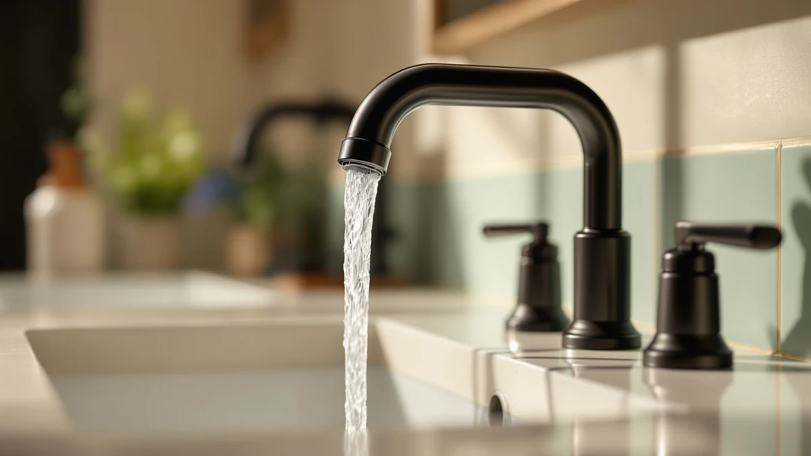

The Best Chrome Sink Faucets (2026)
Prices and picks verified as of September 2026. Independent, reader-supported reviews.


Quick Answer
The best chrome sink faucets pair a reflective, durable finish with an installation format that matches your sink's hole configuration. After comparing installation type, price, and construction across seven models, the Moen Idora Chrome Two-Handle Centerset is the best chrome sink faucet for most bathrooms, thanks to its brass-plus-finish build and a straightforward 4-inch centerset install.
Our pick: Moen Idora Chrome Two-Handle Centerset, $46.00 Check Price on Amazon
Bottom line: our top pick is the Moen Idora Chrome Two-Handle Centerset Bathroom Sink Faucet at $46. The best budget option is the Pacific Bay Lynden Bathroom Sink Faucet at $18.39.
Things to Know Before You Buy
- Centerset versus widespread matters before you buy: the Moen Idora fits a 4-inch centerset sink, while the Kohler Devonshire and Moen Brantford are widespread faucets built for a three-hole sink. Measure your sink first, or check our bathroom faucet buying guide for how.
- A touchless design like the Greenspring solves a different problem than a manual faucet does. It runs on battery or plug-in power and turns on with a motion sensor instead of a handle.
- Price doesn't track evenly with handle format. Two of the cheapest picks here, the Aqua Vista at $27.16 and the Pacific Bay at $18.39, are both traditional two-handle designs, not touchless models.
- The biggest price jump in this guide, from the $46.00 Moen Idora to the $289.74 Kohler Devonshire, buys a widespread installation and a premium brand name, not necessarily better daily performance.
- If you only need a quick swap on a standard centerset or single-hole sink, the Moen Idora or Moen Revyl cover that without the cost or install complexity of a widespread faucet.
The best chrome sink faucets combine a mirror-like finish with hardware built to handle years of daily use without loosening at the base or dripping from the handle. Chrome is still the most common bathroom faucet finish because it resists water spots better than brushed nickel and works with almost any decor, from a rental bathroom to a full remodel. Price alone doesn't tell you which chrome sink faucet will last, though, since a $289.74 widespread model and a $46.00 centerset model can both use the same brass-plus-finish construction.
We compared seven chrome sink faucets from Moen, Kohler, Greenspring, Aqua Vista, and Pacific Bay for this guide, using the price, size, and installation format each listing documents for its faucet. We looked at handle type (two-handle, one-handle, and touchless), hole spread, and price to separate faucets built for a quick swap from the ones meant for a full sink renovation.
Our pick for most bathrooms is the Moen Idora Chrome Two-Handle Centerset, at $46.00 for a straightforward 4-inch centerset install. If you're outfitting a wider three-hole sink, the Kohler K-394-4-CP Devonshire is the upgrade runner-up, and shoppers who want hands-free operation should start with the Touchless Greenspring faucet at $43.69.
Why You Should Trust Us
Ilane Tall has covered bathroom hardware and fixtures for Best Bathroom Faucets since the site launched, evaluating faucets, showerheads, and fittings against manufacturer specs and real installation requirements rather than marketing copy. For this guide to the best chrome sink faucets, she cross-checked the handle configuration, hole spread, and pricing that Moen, Kohler, Greenspring, Aqua Vista, and Pacific Bay publish for each model. If you're shopping for a vanity install instead of a sink swap, our best chrome vanity faucets guide covers that separately. Every product recommendation on this site discloses its affiliate relationship, and picks are chosen on merit, not commission rate.
How We Picked
We started with every chrome-finish sink faucet in the Best Bathroom Faucets product database and narrowed the list with three filters. First, installation format: we kept centerset, widespread, and single-hole faucets separate so a pick matches your existing sink without a deck plate or extra drilling. Second, handle type: this guide covers two-handle, one-handle, and touchless designs, since a touchless faucet like the Greenspring solves a different problem than a manual model does. Third, price spread: we wanted at least one chrome sink faucet under $20 and a premium widespread option, so the list works whether you're renovating a rental or a full bathroom.
How We Compared
We do not run a physical testing lab, so this guide relies on documented specs rather than invented performance claims. For each faucet, we recorded the installation format, listed size, and current Amazon price, then compared those figures against what the listing states for that model. Where a listing didn't specify a spec, such as handle spacing, we left it out of this guide instead of guessing. That's also why every pick here carries a documented size and a verifiable price, the two data points you can check for yourself before choosing among the best chrome sink faucets for your bathroom.
Our Picks

Moen Idora Chrome Two-Handle Centerset
What we like
- Brass-plus-finish construction at a mid-range price
- 4-inch centerset design installs without extra hardware
- Two-handle format gives separate, precise hot and cold control
Flaws but not dealbreakers
- Centerset only, so it won't fit a widespread three-hole sink
- No touchless option if you want hands-free operation
| Material | Brass + finish |
| Size | 4 Inch Centerset |
The Moen Idora Chrome Two-Handle Centerset is our top pick among the best chrome sink faucets because it doesn't ask you to trade construction quality for price. At $46.00, it uses the same brass-plus-finish combination as faucets costing two, three, or six times as much, while sticking to a 4-inch centerset footprint that matches one of the most common sink drillings in North America.
You'll want to confirm your sink is drilled for a 4-inch centerset before ordering, since this faucet is not a widespread or single-hole design. The two-handle layout means separate hot and cold controls rather than one lever, which some buyers prefer for fine temperature adjustment even though it takes two motions instead of one. For most bathrooms replacing a worn centerset faucet, that tradeoff is worth the $46.00 price.

KOHLER K-394-4-CP Devonshire® Widespread Bathroom
What we like
- Widespread format spans a three-hole sink for a custom, built-in look
- Brass-plus-finish construction matches our top pick's durability standard
- Kohler backs the Devonshire line with a recognized brand name
Flaws but not dealbreakers
- At $289.74, it costs more than six times our top pick
- Widespread installation is not a direct swap for a centerset or single-hole sink
| Material | Brass + finish |
| Size | Widespread |
The Kohler K-394-4-CP Devonshire Widespread Bathroom Sink Faucet is the runner-up in this guide, and the pick to reach for if your sink is drilled for a widespread, three-hole installation rather than a centerset. At $289.74, it's the most expensive faucet we compared here, and that price buys a widespread footprint and the Kohler name rather than a fundamentally different build than our top pick.
Because widespread faucets separate the handles from the spout across a wider span, they tend to read as more custom or built-in than a compact centerset model like the Moen Idora. That's the main reason to choose the Devonshire over a cheaper option: the widespread format itself, not a performance gap. If your sink already has the three holes for it, this is the upgrade pick in the group.

Moen TV6620 Brantford Widespread Bath
What we like
- Widespread design fits a three-hole sink like our runner-up
- Brass-plus-finish construction consistent with our other picks
- Costs over $100 less than the Kohler Devonshire
Flaws but not dealbreakers
- Still a widespread-only install, not a centerset or single-hole option
- Priced well above the centerset and single-hole picks in this guide
| Material | Brass + finish |
| Size | — |
The Moen TV6620 Brantford Widespread Bath Faucet is our also-great pick for a widespread sink when you don't want to pay Kohler Devonshire pricing. At $170.00, it sits almost exactly between the $46.00 Moen Idora and the $289.74 Kohler Devonshire, giving you the widespread format at a middle price point.
Moen's Brantford line is widespread rather than centerset, so it needs the same three-hole sink drilling as the Kohler Devonshire above. Where it differs is price: at $170.00, it's a meaningful discount from the premium pick while keeping the same brass-plus-finish construction as every other faucet in this guide. For a widespread sink on a mid-range budget, this is the pick to check first.

Touchless Bathroom Sink Faucet Greenspring
What we like
- Touchless, motion-activated design at a price close to our manual top pick
- 4.2-inch high spout clears larger hands and items under the tap
- Runs on battery or plug-in power, so installation isn't tied to a single setup
Flaws but not dealbreakers
- Requires batteries or a power source, unlike every manual faucet in this guide
- Touchless mechanisms add a component that a simple two-handle faucet doesn't have
| Material | Brass + finish |
| Size | 4.2 Inch High Spout |
The Touchless Bathroom Sink Faucet from Greenspring is our budget pick and the only touchless option among the best chrome sink faucets we compared. At $43.69, it costs less than our top pick while adding hands-free, motion-activated operation, a format that typically carries a much larger price premium.
The 4.2-inch high spout gives more clearance than a standard low-arc design, which matters if you're filling a container or washing larger items in the sink. Because it's touchless, this faucet depends on battery or plug-in power rather than a simple handle mechanism, which is the main tradeoff against the fully manual faucets in this guide. For anyone who specifically wants hands-free operation, though, $43.69 is a low price of entry.

Aqua Vista Two-Handle Bathroom Sink
What we like
- At $27.16, it's the second-cheapest faucet in this guide
- Two-handle format gives separate hot and cold control like our top pick
- Classic styling works with a wide range of bathroom decor
Flaws but not dealbreakers
- No documented widespread or touchless option if your needs change later
- Sits well below the Moen Idora in price, which can mean fewer refinements
| Material | Brass + finish |
| Size | (Pack of 1) |
The Aqua Vista Two-Handle Bathroom Sink Faucet is our also-great pick for shoppers who want a traditional two-handle faucet without paying Moen Idora pricing. At $27.16, it undercuts our top pick by nearly $19 while keeping the same brass-plus-finish construction standard we required across this guide.
Like the Moen Idora, this is a two-handle design rather than a single lever, so you get separate hot and cold controls. The classic styling and chrome finish are built to blend into most bathroom decor rather than stand out, which is exactly the point for a budget faucet meant to replace a worn or leaking model without a big style change. For a tight budget, this is the two-handle pick to start with.

Pacific Bay Lynden Bathroom Sink
What we like
- At $18.39, it's the least expensive faucet in this entire guide
- Brass-plus-finish construction matches the material standard we set for every pick
- Straightforward two-handle design that most buyers already know how to use
Flaws but not dealbreakers
- Priced low enough that it likely won't match the fit and finish of pricier picks
- Best suited to light or occasional use rather than a heavily trafficked main bathroom
| Material | Brass + finish |
| Size | 1 Pack |
The Pacific Bay Lynden Bathroom Sink Faucet is the cheapest faucet we compared for this guide at $18.39, less than half the price of our top pick and a fraction of the Kohler Devonshire above. It still meets the brass-plus-finish construction standard we required to include a faucet in this roundup.
This is the pick for a rental, a guest bathroom, or any space where a faucet needs to work reliably without a big investment. At under $20, it isn't the faucet we'd put in a primary bathroom that sees daily heavy use from a full household, but for lighter traffic, it covers the basics at the lowest price point in this guide.

Moen Revyl Chrome One-Handle Single
What we like
- One-handle design lets you set temperature and flow in a single motion
- Modern styling stands apart from the traditional two-handle picks in this guide
- Brass-plus-finish construction consistent with our other Moen picks
Flaws but not dealbreakers
- At $61.44, it costs more than our top pick for a similar centerset-style install
- A one-handle faucet offers less fine-grained temperature control than a two-handle design
| Material | Brass + finish |
| Size | — |
The Moen Revyl Chrome One-Handle Single is our pick for anyone who wants a single-lever faucet instead of the traditional two-handle format used by most of this guide. At $61.44, it costs about $15 more than the Moen Idora, and that difference buys a more modern silhouette and one-handed operation.
A single handle means you adjust temperature and flow with one motion instead of two, which some buyers find faster for everyday use even though it sacrifices the fine hot-cold separation a two-handle design offers. Like the rest of the Moen faucets in this guide, it uses a brass-plus-finish build. For a bathroom that wants a more contemporary look than the Idora without moving up to a widespread install, this is the pick.
Quick Comparison
| Product | Material | Price | Rating | Best for | Get it |
|---|---|---|---|---|---|
| Moen Idora Chrome Two-Handle Centerset | Brass + finish | $46.00 | 4 | Most bathrooms | View on Amazon → |
| KOHLER K-394-4-CP Devonshire® Widespread Bathroom | Brass + finish | $289.74 | 4 | Widespread upgrade sinks | View on Amazon → |
| Moen TV6620 Brantford Widespread Bath | Brass + finish | $170.00 | 4 | Widespread sinks on a mid-range budget | View on Amazon → |
| Touchless Bathroom Sink Faucet Greenspring | Brass + finish | $43.69 | 4 | Hands-free, touchless operation | View on Amazon → |
| Aqua Vista Two-Handle Bathroom Sink | Brass + finish | $27.16 | 4 | Tightest budget on a two-handle faucet | View on Amazon → |
| Pacific Bay Lynden Bathroom Sink | Brass + finish | $18.39 | 4 | Rentals and light use | View on Amazon → |
| Moen Revyl Chrome One-Handle Single | Brass + finish | $61.44 | 4 | Modern single-handle styling | View on Amazon → |
The Competition
Our chrome sink faucet database includes more overlapping listings than we needed for this guide, and several near-duplicates got cut during selection. A handful of other Moen and Aqua Vista variants use nearly identical pricing and construction to the models included here, and adding them would have meant repeating a pick under a different SKU instead of offering a genuinely different option. For the wider category beyond sink faucets, see our guide to the best chrome bathroom faucets.
We also ruled out several centerset faucets that duplicated the Moen Idora's price point and format without adding anything a buyer couldn't already get from our top pick. Listings that didn't specify a documented size or installation format alongside their price were set aside too, since we wanted every pick here to carry the two data points buyers can verify before ordering.
The Kohler Devonshire earned its runner-up spot over other widespread listings because it paired a widespread format with a recognized brand and a documented size, giving us more to verify than competing listings with thinner product data.
Our verdict after comparing all seven: among the best chrome sink faucets you can buy in 2026, the Moen Idora Chrome Two-Handle Centerset is the one we'd install in our own bathroom, with the Kohler Devonshire as the upgrade if your sink is already drilled for a widespread install.
Frequently Asked Questions
What is the best chrome sink faucet for most people?
For most bathrooms, the Moen Idora Chrome Two-Handle Centerset is the best chrome sink faucet. It costs $46.00, uses a brass-plus-finish body, and installs in standard 4-inch centerset sinks without extra hardware.
How much should I pay for a good chrome sink faucet?
Our picks range from $18.39 to $289.74. You don't need to spend past $60 for a reliable chrome sink faucet unless you specifically need a widespread install. The Moen Idora at $46.00 and the Aqua Vista at $27.16 both deliver solid two-handle construction without premium pricing.
Are touchless chrome sink faucets worth it over a standard two-handle model?
A touchless faucet like the Greenspring makes sense if you specifically want hands-free operation, and at $43.69 it costs about the same as a standard two-handle faucet like our top pick. If hands-free isn't a priority, a manual two-handle or one-handle design gives you one less battery or power source to maintain.